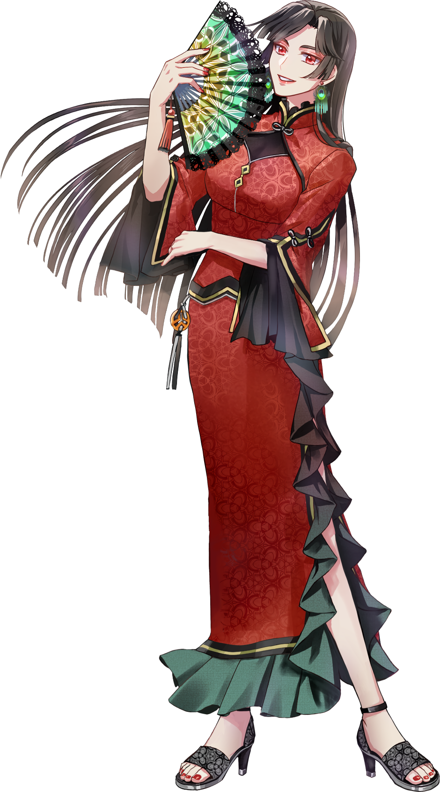

リ ー ホ ン
麗紅
LIHONG
CV. ???
「──黑芳、口が悪くてすまないね
後で私からガツンと言っといてやるからさ」
PROFILE
| 年齢 | 27歳 |
|---|---|
| 誕生日 | 9月23日 |
| 職業 | 九天閣 レストランオーナー |
| 身長 | 174cm |
| 出身 | 横浜中華街 |
| 趣味・特技 | コミュニケーション |
| 家族構成 | 父 |
| イメージカラー | 紅の八塩（くれないのやしお） |
明朗快活で面倒見の良い姉御肌。
中華街のシンボルである
九天閣の2階で、
レストラン「天竺亭（てんじくてい）」を経営している。
料理はシェフたちに任せており、
本人は接客と食べることが専門。
人と話すことが好きで、
麗紅に会うことを楽しみに訪れる常連客も多い。
黑芳とは10年以上の付き合いがあり、
実の弟のように思っている。
────「ほら、いい顔になった。それが一番！」
今日も天竺亭には、たくさんの笑顔が咲く。
今日も天竺亭には、たくさんの笑顔が咲く。